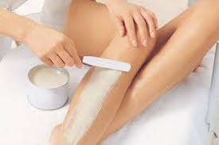

MAQUINA ELECTRICA
Extraen el pelo desde la raíz, capturándolos con su cabezal. Son prácticas, limpias
y se adaptan muy bien a las zonas extensas como las piernas.

CON SERA CALIENTE
Se funde al baño maría y sus componentes son una mezcla de cera virgen de abejas,
resinas y ciertas sustancias emolientes. Es muy efectiva aunque requiere cierta habilidad para su uso.
CERA TIBIA
Se utiliza de la misma forma que la cera caliente pero sus componentes son diversos, con sustancias como
la miel o la manzanilla para tratar la piel lo más suave posible. Se elimina con la ayuda de tiras de algodón.

BANDAS DE CERA TIBIA
Son de uso inmediato, calentándolas un poco con las palmas de las manos.
Se adhieren a la piel para después estirar en sentido contrario de los pelos.
Incluso hay algún tipo exclusivo para la cara con sustancias como la manzanilla.
DECOLORACION
Ideal par las zonas como el bigote, las mejillas, el mentón o los brazos en las que haya
un vello corto que solo necesite ser decolorado. Es importante respetar las indicaciones
del fabricante para que el vello no quede tan blanco que se haga especialmente evidente la decoloración.

CREMAS DEPILATORIAS
Aunque se utilice el término genérico de cremas, en el mercado podemos encontrarlos en
forma de espumas, geles. Se aplican sobre la zon a depilar con la ayuda de una espátula y
se eliminan con agua una vez pasado el tiempo indicado.